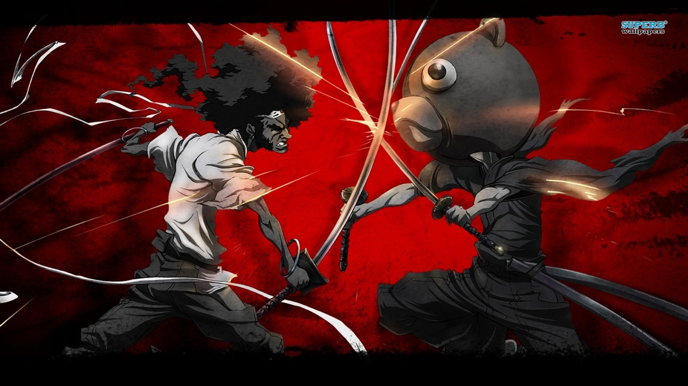
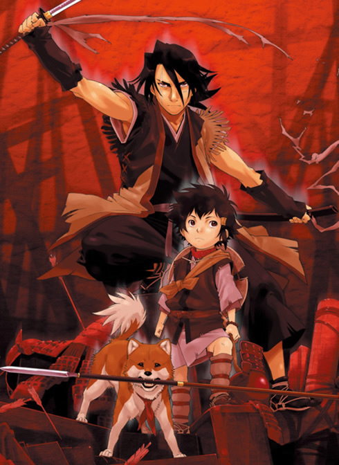
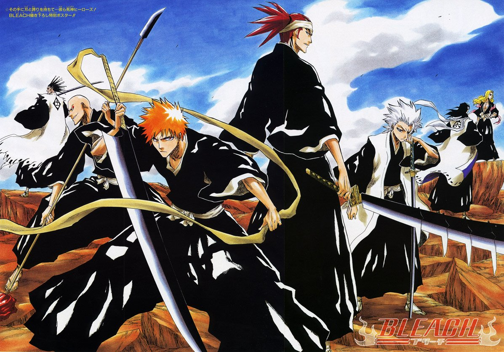
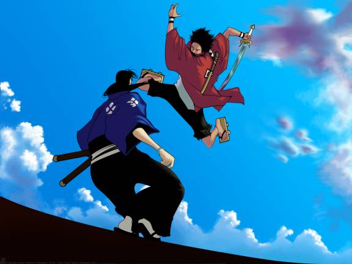

5: Basilisk: Kouga Ninpou Chou

Ratings : 🌟 7.6
English Name : Basilisk
Genre :ActionAdventureHistoricalSupernaturalSamuraiRomance
Seasons : 1
Episodes : 24
Air-Date : 13-April-2005
Watch-Time : 24 min.(Per Ep.)
Synopsis:
For centuries, the Iga and Kouga ninja clans have engaged in a bitter war. But when a ceasefire is ordered by the powerful warlord Ieyasu Tokugawa, the two clans are forced to put down their arms.
Years later, Gennosuke Kouga, heir of the Kouga clan, and Oboro Iga, heir of the Iga clan, have fallen in love. Through marriage, both heirs aim to bring peace to the clans. But their hopes are dashed when flames of rivalry between their clans are reignited, and they are dragged into another war.
Ieyasu's two grandsons have both claimed to be the next heir to the shogunate. To resolve this dispute, both the Kouga and Iga are ordered to send their 10 best warriors to fight in a bloody battle royale, with each clan representing one of the potential shogunate heirs. Two scrolls with the names of the fighters are given and are to be marked in blood upon the given fighter's death. The prize for winning is the favor of the Tokugawa shogunate for a thousand years. Torn between their love for each other and duty to their clans, Gennosuke and Oboro must ultimately decide the fate of their clans.
4: Afro Samurai
Ratings : 🌟 7.4
English Name : Afro Samurai
Genre : ActionAdventureSamurai
Seasons : 1
Episodes : 5
Air-Date : 3-May-2007
Watch-Time : 27 min.(Per Ep.)
Synopsis:
When he was a young boy, Afro witnessed his father be cut down in a duel at the hands of a man known only as Justice. After taking the life of Afro's father, Justice cast aside his Number Two headband and took the Number One to claim its godly powers as his own.
Years later, having obtained the Number Two headband which grants him the right to challenge the Number One, Afro moves forward in his hunt for revenge on the man who murdered his father. There is just one thing that stands in his way—everyone else in the world! Though the Number One can only be challenged by the Number Two, the Number Two can be challenged by anyone. As his enemies gather to try and take the title of Number Two, Afro must fight through a myriad of foes and obstacles if he hopes to reach the Number One and claim vengeance once and for all.
3: Stranger: Mukou Hadan
Ratings : 🌟 8.3
English Name : Sword of the Stranger
Genre : ActionAdventureHistoricalSamurai
Seasons : 1
Episodes : 1
Air-Date : 29-September-2007
Watch-Time : 1hr. 43min.
Synopsis:
In the Sengoku period of Japan, a young orphan named Kotarou and his dog Tobimaru steal from unsuspecting villagers in order to make ends meet. However, Kotarou is forced to remain on the run when he finds himself being hunted down by assassins sent by China's Ming Dynasty for mysterious reasons not involving his petty crimes.
Fortunately, the duo run into Nanashi, a ronin who has taken refuge in a small temple, when Kotarou is attacked and Tobimaru poisoned. Although the samurai saves the helpless pair from their pursuers, he feels that there is no need to help them further; but when offered a gem in exchange for his services as a bodyguard, he reluctantly accepts Kotarou's offer of employment—just until Tobimaru is healed and the two reach their destination. As the three set out on a perilous journey, it soon becomes evident that their path is riddled with danger, as the Ming Dynasty has now sent a terrifying swordsman after them to capture Kotarou and fulfill a certain prophecy.
2: Bleach: Burichi
Ratings : 🌟 7.8
English Name : Bleach
Genre : ActionAdventureComedySamuraiSupernaturalShounen
Seasons : 1
Episodes : 366
Air-Date : 5-October-2004
Watch-Time : 24 min.(Per Ep.)
Synopsis:
Ichigo Kurosaki is an ordinary high schooler—until his family is attacked by a Hollow, a corrupt spirit that seeks to devour human souls. It is then that he meets a Soul Reaper named Rukia Kuchiki, who gets injured while protecting Ichigo's family from the assailant. To save his family, Ichigo accepts Rukia's offer of taking her powers and becomes a Soul Reaper as a result.
However, as Rukia is unable to regain her powers, Ichigo is given the daunting task of hunting down the Hollows that plague their town. However, he is not alone in his fight, as he is later joined by his friends—classmates Orihime Inoue, Yasutora Sado, and Uryuu Ishida—who each have their own unique abilities. As Ichigo and his comrades get used to their new duties and support each other on and off the battlefield, the young Soul Reaper soon learns that the Hollows are not the only real threat to the human world.
1: Samurai Champloo
Ratings : 🌟 8.5
English Name : Samurai Champloo
Genre : ActionAdventureComedyHistoricalSamuraiShounen
Seasons : 1
Episodes : 26
Air-Date : 20-May-2004
Watch-Time : 24 min.(Per Ep.)
Synopsis:
Fuu Kasumi is a young and clumsy waitress who spends her days peacefully working in a small teahouse. That is, until she accidentally spills a drink all over one of her customers! With a group of samurai now incessantly harassing her, Fuu desperately calls upon another samurai in the shop, Mugen, who quickly defeats them with his wild fighting technique, utilizing movements reminiscent to that of breakdancing. Unfortunately, Mugen decides to pick a fight with the unwilling ronin Jin, who wields a more precise and traditional style of swordfighting, and the latter proves to be a formidable opponent. The only problem is, they end up destroying the entire shop as well as accidentally killing the local magistrate's son.
For their crime, the two samurai are captured and set to be executed. However, they are rescued by Fuu, who hires the duo as her bodyguards. Though she no longer has a place to return to, the former waitress wishes to find a certain samurai who smells of sunflowers and enlists the help of the now exonerated pair to do so. Despite initially disapproving of this idea, the two eventually agree to assist the girl in her quest; thus, the trio embark upon an adventure to find this mysterious warrior—that is, if Fuu can keep Mugen and Jin from killing each other.
Set in an alternate Edo Period of Japan, Samurai Champloo follows the journey of these three eccentric individuals in an epic quest full of action, comedy, and dynamic sword fighting, all set to the beat of a unique hip-hop infused soundtrack.